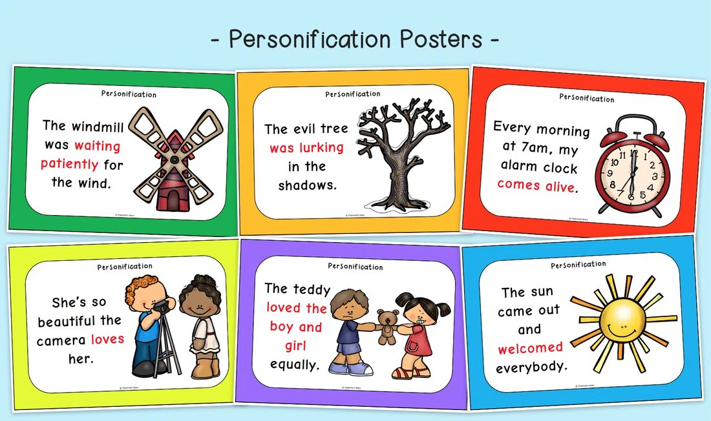
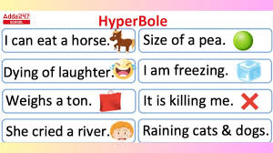
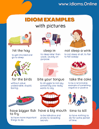
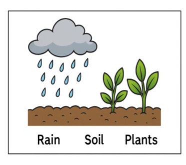
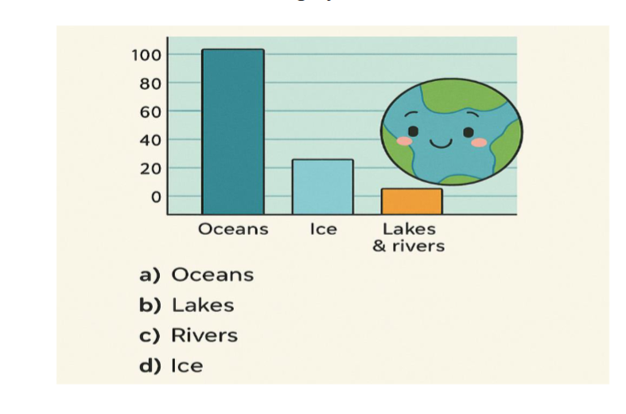

🚀 Week 30 of 35 — Unit 6: Earth, Space & Beyond
Week #: 30 of 35 (Unit 6, week 5 of 6) Dates: Apr 11 – Apr 15, 2027 | Unit: Unit 6: Earth, Space, and Beyond | |
Unit Padlet
Practice Websites
Grammar Quest - Daily Oral Language
Maths Quest Pro - Master Your Math Facts!
Extra Math Resources
Unit 1: Math (Place Value and Operations)
Unit 2: Math (Measurement and Data)
Unit 4: Math (Multiplication and Division)
Unit 6: Math (Algebra, FDP, Fractions)
Class | Sunday | Monday | Tuesday | Wednesday | Thursday |
This week's updates / notes: | No notes for this day. Grey italic text = added in the October 2026 template update (not in the original plan). | No notes for this day. | No notes for this day. | No notes for this day. | No notes for this day. |
Morning Meeting / SEL | 5A - Individual Activity to Whole Group Meeting 5B - One to One Enrichment 5C - Morning Practice | 5A - Individual Activity to Whole Group Meeting 5B - One to One Enrichment 5C - Morning Practice | 5A - Individual Activity to Whole Group Meeting 5B - One to One Enrichment 5C - Morning Practice | Regular morning meeting routine (no specific plan listed for this day). | Regular morning meeting routine (no specific plan listed for this day). |
Literacy: Vocabulary & Spelling Standards | CC L.5.4, L.5.6 · EE.L.5.4, EE.L.5.6 | CC L.5.4, L.5.6, L.5.2.E, RF.5.3 · EE.L.5.4, EE.L.5.6, EE.L.5.2.H, EE.RF.5.3 | CC L.5.4, L.5.6 · EE.L.5.4, EE.L.5.6 | CC L.5.4, L.5.6 · EE.L.5.4, EE.L.5.6 | CC L.5.4, L.5.6, L.5.2.E, RF.5.3 · EE.L.5.4, EE.L.5.6, EE.L.5.2.H, EE.RF.5.3 |
Literacy: Vocabulary & Spelling Activities/Tasks (Differentiation) Routine: give the definition first (no guessing) → students share where they might use it, similar/different words. Morphology, examples/non-examples, synonyms/antonyms & more on the vocabulary cards: Vocabulary Padlet (incl. Spelling: words Mon · test Thu) | G5: consolidate — To combine separate items into a single, stronger whole; to strengthen. G3: relay — To pass along information, a message, or a signal. Unit: telescope — An optical instrument designed to make distant objects appear closer and larger. | G5: criterion — A standard or principle by which something may be judged or decided. G3: conclude — To bring something to an end or to reach a decision after thinking. Unit: rivalry — Competition for the same objective or for superiority in the same field. Spelling — introduce Week 30 lists (practice all week). Low (Building Spelling Skills, List 30): which, where, there, before, after, over, again, inside, outside, under High (Building Spelling Skills, List 30): multiply, imagination, favorite, computer, citizenship, invisible, undercover, enjoyment, discussion, America, unusual, example, melody, temperature, understanding, experiment, explanation, oxygen | G5: culmination — The highest or final point of something; the climax. G3: deliver — To bring and hand over something to the intended recipient. Unit: village — A small settlement of houses, smaller than a town. | G5: legacy — Something handed down from the past; a lasting impact or contribution. G3: summarize — To give a brief statement of the main points of something. Unit: harvest — The process or period of gathering crops from the fields. | G5: flourish — To grow or develop in a healthy, vigorous way; to thrive. G3: persuade — To convince someone to do or believe something through reasoning or argument. Unit: tourist — A person who travels to and visits places for pleasure. |
Literacy: Vocabulary & Spelling Assessment (Differentiation) | Quick check: Use today's word in a spoken or written sentence. Low: match the word to a picture or definition. Mid: complete a sentence frame. High: write an original sentence. | Quick check: Use today's word in a spoken or written sentence. Low: match the word to a picture or definition. Mid: complete a sentence frame. High: write an original sentence. | Quick check: Use today's word in a spoken or written sentence. Low: match the word to a picture or definition. Mid: complete a sentence frame. High: write an original sentence. | Quick check: Use today's word in a spoken or written sentence. Low: match the word to a picture or definition. Mid: complete a sentence frame. High: write an original sentence. | Spelling test — Week 30 lists (Low: List 30 · High: List 30). |
Literacy: Reading Standards | CC RL.5.4, L.5.5 · EE.RL.5.4, EE.L.5.5 | CC RL.5.4, L.5.5 · EE.RL.5.4, EE.L.5.5 | CC RL.5.4, L.5.5 · EE.RL.5.4, EE.L.5.5 | CC RL.5.10, RI.5.10 · EE.RL.5.10, EE.RI.5.10 | CC RL.5.10, RI.5.10 · EE.RL.5.10, EE.RI.5.10 |
Literacy: Reading Activities/Tasks (Differentiation) | Guided Reading: Figurative Language Posters — Similes & Metaphors. Warm-up (3 min): "Finish the Sentence" game — write "As fast as a __" and "He was a __ in the race" on the board or orally; whole-group activity calling on students to select the correct metaphor/simile (Twinkl interactive activity). Lesson (10 min): I Do — watch video (group activity); You Do — students complete the activity. IXL: G4 Similes/Metaphors · G5 Similes/Metaphors · G4 Identify Similes/Metaphors · G5 Identify Similes/Metaphors SeeSaw: Simile/Metaphor Sort · Simile/Metaphor Practice Kahoot: Similes/Metaphors Rotations (12-15 min each) — Group 1: RIT Score Pack with teacher · Group 2: Independent Reading · Group 3: Task Cards · Group 4: IXL/SeeSaw | Guided Reading: Personification & Hyperbole. Warm-up (3 min): "Guess the Figurative Language" — say aloud "The sun smiled down on us" and "I told you a million times!"; students guess which is personification and which is hyperbole. Lesson (10 min): I Do — explain personification and hyperbole with visual examples; We Do — create class examples together; You Do — students illustrate one example of personification or hyperbole.   IXL: G4 Personification · G5 Personification SeeSaw: Personification · Personification Practice Kahoot: Personification Worksheets: Personification — Worksheet 1 · Worksheet 2 · Worksheet 3; Hyperbole — Worksheet 1 · Worksheet 2 · Worksheet 3 Rotations (12-15 min each) — Group 1: RIT Score Pack with teacher · Group 2: Independent Reading · Group 3: Task Cards · Group 4: IXL/SeeSaw | Guided Reading: Idioms in Context. Warm-up (3 min): "Act It Out" — show an idiom (e.g. "Break a leg") and have a student act it out; class guesses the meaning. Sample idioms: englishstudyhere.com · eslforums.com Lesson (10 min): I Do — show 5 common idioms and their meanings; We Do — match idiom cards (Kahoot Idioms); You Do — match idioms to their literal meanings using worksheet. Worksheets: Worksheet 1 · Worksheet 2 Rotations (12-15 min each) — Group 1: RIT Score Pack with teacher · Group 2: Independent Reading · Group 3: Task Cards · Group 4: IXL/SeeSaw Anchor charts / resources (from the 2025-26 plan): 🔹 Warm-up (3 min): "Act It Out" Show an idiom (e.g., "Break a leg") and have a student act it out. Class guesses the meaning. Cards can be printed an cut and share to help kids choose which is being acted out in front of them.  | Not yet planned. Suggested: Review / catch-up: revisit this week's reading focus with a short guided-reading text; reteach any skill students found hard. | Not yet planned. Suggested: Review / catch-up: revisit this week's reading focus with a short guided-reading text; reteach any skill students found hard. |
Literacy: Reading Assessment (Differentiation) | Informal Assessment of questions asked and completed during guided reading. | Informal Assessment of questions asked and completed during guided reading. | Exit check: Short task on today's focus: meaning of words and phrases, including figurative language. Low: point to or say the answer with picture/word-bank support. Mid: answer with a sentence frame. High: write a short answer using evidence from the text. | Exit check: Short task on today's focus: read and comprehend grade-band literature and informational text. Low: point to or say the answer with picture/word-bank support. Mid: answer with a sentence frame. High: write a short answer using evidence from the text. | Exit check: Short task on today's focus: read and comprehend grade-band literature and informational text. Low: point to or say the answer with picture/word-bank support. Mid: answer with a sentence frame. High: write a short answer using evidence from the text. |
Literacy: Writing / Language Standards (Language Sun & Tue · Writing Mon & Wed · Thu catch-up) | CC L.5.3.A · EE.L.5.3.A | CC W.5.3, W.5.5 · EE.W.5.3, EE.W.5.5 | CC L.5.1.A · EE.L.5.1 | CC W.5.3, W.5.5 · EE.W.5.3, EE.W.5.5 | CC L.5.3.A, L.5.1.A, W.5.3, W.5.5 · EE.L.5.3.A, EE.L.5.1, EE.W.5.3, EE.W.5.5 |
Literacy: Writing / Language Activities/Tasks (Differentiation) IXL this week: Low: Select the best preposition to complete the sentence (G2) High: Identify prepositional phrases (G3) Stretch: Identify prepositional phrases (G4) · Identify prepositional phrases (G5) | Grammar (Sun) — Sentence Variety & Clarity OBJ: Vary sentence length and structure for fluent, engaging writing Packets — Low (K-1): K: L5.4 Revising, G1: L4.1 Planning · Mid (2-3): G2: L4.1 Planning, G3: L4.1 Planning · High (4-6): G4: L3.22 Using Descriptive Language (extend to sentence variety), G4: L4.1 Prewriting, G5: L1.29 Writing a Paragraph (sentence variety focus), G6: L1.32 Writing a Paragraph Alternating simple descriptions with complex explanations creates better space writing. | Writing — Revise with the checklist and peer feedback Reread the draft aloud; model checking the co-built rubric and running a partner "2 stars and a wish"; students revise story order, add missing details, strengthen weak sentences. Grammar link: adjectives and feeling words replace plain ones. TWR: revision-moves menu (pick two): combine two choppy sentences; vary two sentence openers (not every sentence starts with the character's name); expand one thin sentence with how? or why? Resources: Story Elements Checklist (Padlet student organizers) — co-built rubric (peer-feedback self-check) IXL: Stronger verb (G2) — Combine sentences (G3) — Stretch: Stronger verb (G4) — Compound sentences (G5) | Grammar (Tue) — Prepositional Phrases OBJ: Identify prepositional phrases; use them to add precision Packets — Low (K-1): K: L2.4 Prepositions (extend to full prepositional phrases), G1: L1.5 Prepositions (extend to prepositional phrase context) · Mid (2-3): G2: L4.2 Writing (writing process — grammar in sentences), G3: L4.2 Writing (writing process application) · High (4-6): G4: L1.9 Prepositions (extend to prepositional phrases in context), G5: L1.18 Prepositions (extend to prepositional phrases in context), G6: L1.21 Prepositional Phrases Beyond the Milky Way, through the asteroid belt, above the atmosphere. | Writing — Edit and strengthen word choice Model a final edit against the rubric: past tense, capitals, full stops, best-try spelling; students edit, then swap one plain word for a stronger one in two places. Early finishers add a title and labeled illustration. TWR: complete-sentence test on your own story, no grammar terms — WHO is it about? WHAT HAPPENED? (teacher plants one broken sentence in the class model to find first); word-swap stays. Resources: co-built rubric (final check) | Catch-up day — reteach or extend this week's grammar and writing; finish unfinished drafts; assign this week's IXL practice (links in the left column: Low = reteach, High = consolidate, Stretch = extension). |
Literacy: Writing / Language Assessment (Differentiation) | Language check: Write 3 to 5 sentences that apply today's rule; use this week's IXL skill. Low: K-1 packet page with teacher support. Mid: Grades 2-3 packet page. High: Grades 4-6 packet page or IXL Stretch. | Writing check: Check today's writing against the co-built rubric (one target from today's lesson). Low: oral rehearsal first, then a sentence frame or labelled picture. Mid: word bank and a partner check. High: independent, plus one stretch goal. | Language check: Write 3 to 5 sentences that apply today's rule; use this week's IXL skill. Low: K-1 packet page with teacher support. Mid: Grades 2-3 packet page. High: Grades 4-6 packet page or IXL Stretch. | Writing check: Check today's writing against the co-built rubric (one target from today's lesson). Low: oral rehearsal first, then a sentence frame or labelled picture. Mid: word bank and a partner check. High: independent, plus one stretch goal. | Catch-up check: Check IXL SmartScores on this week's language skills and conference with 2 to 3 writers on unfinished drafts. |
Math Standards (pacing W29, from the Awsaj Math Curriculum) | STANDARD 1. Area and perimeter: 3.MD.D.8; 4.MD.A.3 (EE: M.EE.4.MD.3) 2. Area of a triangle – counting squares: 3.MD.C.6 3. Area of a right-angled triangle: 3.MD.C.7 4. Area of any triangle: 3.MD.C.7 | PRIORITY 1. Area and perimeter: 3.MD.D.8; 4.MD.A.3 (EE: M.EE.4.MD.3) 2. Area of a triangle – counting squares: 3.MD.C.6 3. Area of a right-angled triangle: 3.MD.C.7 4. Area of any triangle: 3.MD.C.7 | INTERVENTION 1. Area of a right-angled triangle: 3.MD.C.7 2. Area of any triangle: 3.MD.C.7 3. Area of a parallelogram: 3.MD.C.7 | ||
Math Activities/Tasks (Differentiation) Pacing W29 · B10 Area, perimeter and volume W28–W31 | STANDARD · ~4 new / wk 1. Area and perimeter 3.MD.D.8 4.MD.A.3 ▶ VIDEO · GUIDE · SLIDES · PPT · LESSON · SHEET · DISPLAY · ANSWERS · T/F · PRE-TEACH · TA SHEET · TA ANS · TRANSCRIPT 2. Area of a triangle – counting squares 3.MD.C.6 ▶ VIDEO · GUIDE · SLIDES · PPT · LESSON · SHEET · DISPLAY · ANSWERS · T/F · PRE-TEACH · TA SHEET · TA ANS · TRANSCRIPT 3. Area of a right-angled triangle 3.MD.C.7 ▶ VIDEO · GUIDE · SLIDES · PPT · LESSON · SHEET · DISPLAY · ANSWERS · T/F · PRE-TEACH · TA SHEET · TA ANS · TRANSCRIPT 4. Area of any triangle 3.MD.C.7 ▶ VIDEO · GUIDE · SLIDES · PPT · LESSON · SHEET · DISPLAY · ANSWERS · T/F · PRE-TEACH · TA SHEET · TA ANS · TRANSCRIPT End of Block 9 · FDP Differentiation: Each lesson includes opportunities for partner practice, common misperceptions, independent practice, and a challenge question for differentiation. | PRIORITY · ~3 new / wk 1. Area and perimeter 3.MD.D.8 4.MD.A.3 ▶ VIDEO · GUIDE · SLIDES · PPT · LESSON · SHEET · DISPLAY · ANSWERS · T/F · PRE-TEACH · TA SHEET · TA ANS · TRANSCRIPT 2. Area of a triangle – counting squares 3.MD.C.6 ▶ VIDEO · GUIDE · SLIDES · PPT · LESSON · SHEET · DISPLAY · ANSWERS · T/F · PRE-TEACH · TA SHEET · TA ANS · TRANSCRIPT 3. Area of a right-angled triangle 3.MD.C.7 ▶ VIDEO · GUIDE · SLIDES · PPT · LESSON · SHEET · DISPLAY · ANSWERS · T/F · PRE-TEACH · TA SHEET · TA ANS · TRANSCRIPT 4. Area of any triangle 3.MD.C.7 ▶ VIDEO · GUIDE · SLIDES · PPT · LESSON · SHEET · DISPLAY · ANSWERS · T/F · PRE-TEACH · TA SHEET · TA ANS · TRANSCRIPT End of Block 9 · FDP Differentiation: Each lesson includes opportunities for partner practice, common misperceptions, independent practice, and a challenge question for differentiation. | INTERVENTION · ~2 new / wk 1. Area of a right-angled triangle 3.MD.C.7 ▶ VIDEO · GUIDE · SLIDES · PPT · LESSON · SHEET · DISPLAY · ANSWERS · T/F · PRE-TEACH · TA SHEET · TA ANS · TRANSCRIPT 2. Area of any triangle 3.MD.C.7 ▶ VIDEO · GUIDE · SLIDES · PPT · LESSON · SHEET · DISPLAY · ANSWERS · T/F · PRE-TEACH · TA SHEET · TA ANS · TRANSCRIPT 3. Area of a parallelogram 3.MD.C.7 ▶ VIDEO · GUIDE · SLIDES · PPT · LESSON · SHEET · DISPLAY · ANSWERS · T/F · PRE-TEACH · TA SHEET · TA ANS · TRANSCRIPT 1× support block — pick from the panel below End of Block 9 · FDP Differentiation: Each lesson includes opportunities for partner practice, common misperceptions, independent practice, and a challenge question for differentiation. | ||
Math: Support Block Activities/Tasks (pick one) | Rec/PK4 · Make pairs-odd and even · Y1/KG · Less than, greater than, equal to · Y2/Gr.1 · Missing number problems · Y2/Gr.1 · The 10 times-table · Y3/Gr.2 · How many ways · Y4/Gr.3 · What is area · Y4/Gr.3 · Count squares · Y4/Gr.3 · Find missing lengths in rectilinear shapes · Y5/Gr.4 · Perimeter of rectangles · Y5/Gr.4 · Area of rectangles · Y5/Gr.4 · Area of compound shapes · Y5/Gr.4 · Estimate area · Y5/Gr.4 · Convert units of length · Y5/Gr.4 · Compare volume | ||||
Math Assessment (Differentiation) | Pre-check: Quick pre-check on this week's skills (IXL formative pre-test or 3 questions from the first lesson). | Exit check: 2 to 3 questions from each strand's SHEET or T/F slide at the end of the lesson. Intervention: with the TA sheet and concrete materials. Priority: partner then independent. Standard: independent plus the challenge question. | Exit check: 2 to 3 questions from each strand's SHEET or T/F slide at the end of the lesson. Intervention: with the TA sheet and concrete materials. Priority: partner then independent. Standard: independent plus the challenge question. | Exit check: 2 to 3 questions from each strand's SHEET or T/F slide at the end of the lesson. Intervention: with the TA sheet and concrete materials. Priority: partner then independent. Standard: independent plus the challenge question. | Check: IXL formative assessment on this week's skills. End of block: End of Block 9 · FDP Version A · Version A · Answers · Version B · Version B · Answers · SATs practice question bank |
Science and/or Social Studies Standards Explore | 5-ESS2-2, 5-ESS3-1 | 5-ESS2-2 | 5-ESS3-1 | 5-ESS2-2, 5-ESS3-1 | 5-ESS2-2, 5-ESS3-1 |
Activities/Tasks (Differentiation) Explore 3-day plan (Mon–Wed) Earth, Our Home — Systems & Caring for the Planet IXL this week: Low: Reduce, Reuse, Recycle (Gr 2) · High: Label Parts of Water Cycle Diagrams (Gr 4) · Extra: Water on Earth (Gr 2) Stretch: Geosphere, Biosphere, Hydrosphere & Atmosphere (Gr 5) · Describe and Graph Water on Earth (Gr 5) | Review / catch-up — revisit last week's Explorer learning; finish unfinished investigations or SeeSaw posts; preview this week's topic. | Mon · Hook + Investigate ▶ Hook video: National Geographic ‘Earth 101’ (≈3.5 min) Vocab: Rain, Soil, Plants, Water, Grow, Earth systems, interact; recycle, reduce, reuse. What Helps Plants Grow? (5 mins): show a plant, a cup of soil and a spray bottle. Ask: “What does a plant need to grow? Where does water come from? What does soil do?” Record responses. Where Is Earth’s Water? (10 mins): ‘Where Can We Find Water?’ (SciShow Kids) — make a simple bar graph of oceans / ice / lakes & rivers; most of Earth’s water is salt water in the oceans, and only a small share is fresh water (ice, lakes, rivers, underground). Explicit teaching (10 mins): rain gives water; soil holds water & nutrients; plants absorb them. Teacher model: “Rain gives water to the soil. The soil helps the plants grow.” Build an anchor chart. Investigate: water cycle in a bag (tape to a sunny window) — watch evaporation & ‘rain’. Objective: Explain how rain, soil, and plants interact as parts of Earth's water cycle. Explorer photos / resources (from last year's plans): Record responses Explicit Teaching (10 minutes) Assessment question picture.  | Tue · Apply + Record Apply — Caring for our planet: recycling sort (Community Sorting); then read and make a simple bar graph of class data (most / least). Resources: Twinkl: Recycling Sorting Activity · NASA Space Place: All About Earth Record: three actions we can take to look after Earth (SeeSaw sentence: “Communities can ___.”). Objective: Identify actions people can take to look after Earth, including recycling. Explorer photos / resources (from last year's plans): “How do you know?” Explicit Teaching (10 minutes) Display the assessment graph.  | Wed · Review + Check Review: Earth systems + sustainability; quick check. Showcase: ‘Caring for Earth’ message lines; full draft of all scripts due. Objective: Explain how Earth's systems connect and why caring for them (through actions like recycling) matters. | Review / catch-up — consolidate Mon–Wed learning; complete recordings/reflections; reteach or extend as needed. |
Assessment (Differentiation) Explore | Review check: Students explain one thing they remember from the last Explore lesson, using a key word from the unit. Low: point and say with a picture. Mid: sentence frame. High: written explanation. | Assessment: Complete the anchor chart sentence “Rain gives water to the soil. The soil helps the plants grow” and observe the water-cycle-in-a-bag model. Differentiation: complete the sentence with a word bank + adult support / complete the sentence independently with a word bank / explain the full rain-soil-plant water cycle in own words independently | Assessment: Complete the SeeSaw sentence “Communities can ___” with one action to care for Earth. Differentiation: complete the sentence with a picture/word bank + adult support / complete the sentence independently with a word bank / name three actions and explain how each helps Earth independently | Assessment: Review: Earth systems + sustainability; quick check. Differentiation: name one Earth system with support / name one Earth system and one caring action independently / explain how Earth's systems connect and why sustainability matters independently | Review check: Students explain one thing they learned in Explore this week, using a key word from the unit. Low: point and say with a picture. Mid: sentence frame. High: written explanation. |